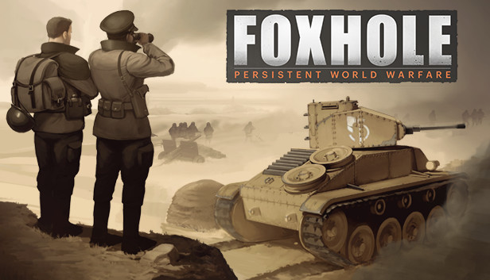
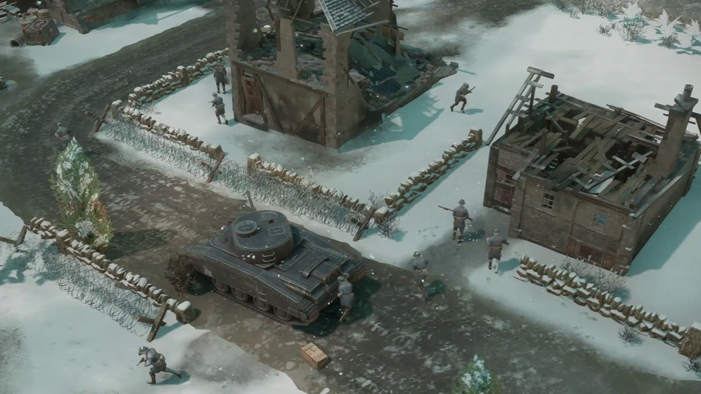

Gameplay Overview
Exploring the Battlefield
Foxhole offers a deep, persistent battlefield where player decisions have lasting impacts. The terrain, supply, and coordination define your chances of success.
Players engage in infantry combat, vehicle warfare, and logistics roles, all essential for victory. Communication and teamwork are crucial in this dynamic environment.
Community and Events
Active and Engaged Players
The Foxhole community is known for its cooperation and large-scale organized events. Join clans, participate in wars, and contribute to the evolving story.
Regular updates and developer events keep the gameplay fresh and engaging for veterans and newcomers alike.